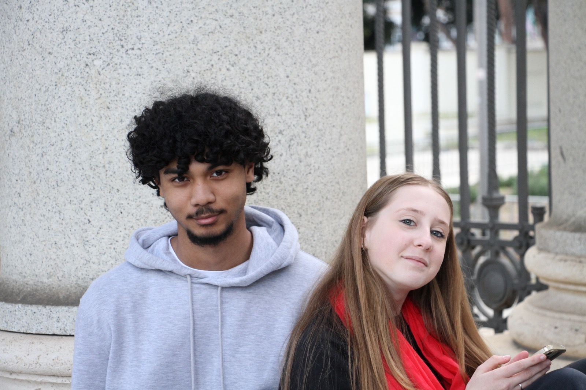
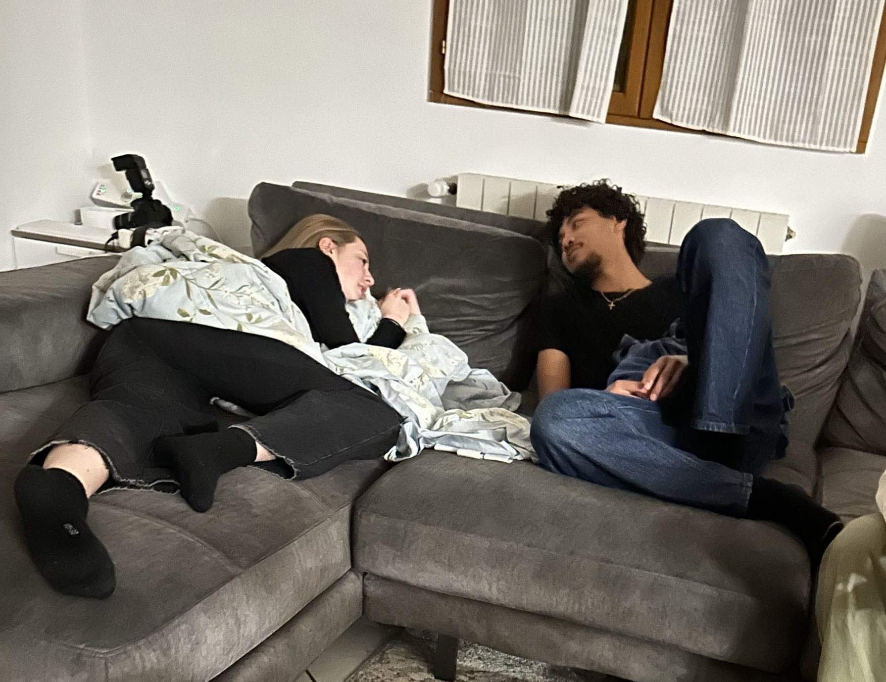
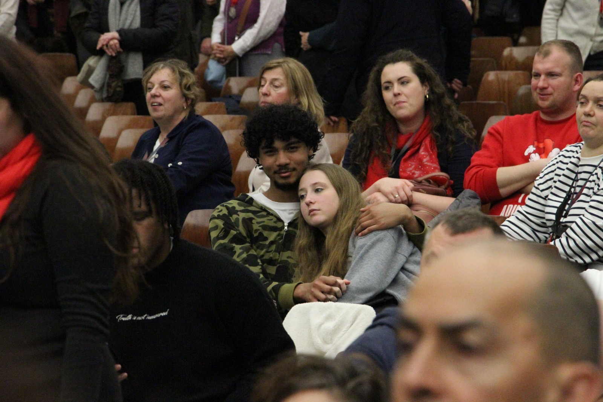
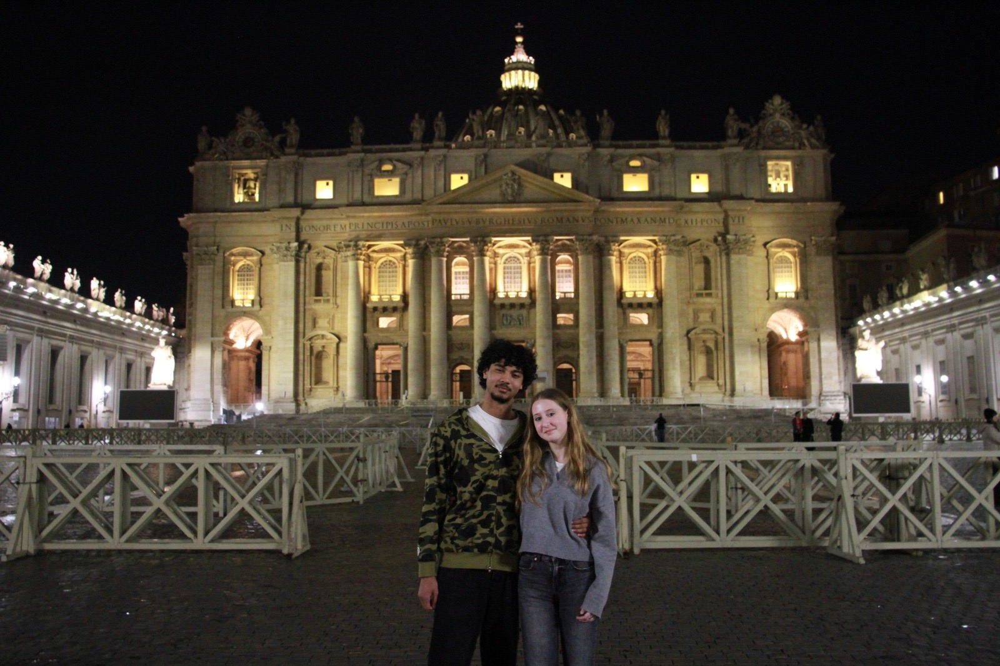

J-1

Je me souviens encore de la timidité qui m'animait, alors qu'on s'était parlé pendant toutes les vacances de Noël et toute la période de cours qui avait suivi.
Un petit musée de souvenirs
Ce site rassemble toutes les pièces du puzzle de notre non relation.
Commencer l'histoireChapitre 1
Après avoir fait un minimum connaissance lors de notre deuxième messe ensemble, j'ai eu la chance de t'accueillir chez moi pour ma petite soirée 😌😌

J'ai eu l'impression de me noyer dans tes yeux à ce moment-là, mais je devais rester fort parce qu'un Noachim un peu trop frustré allait interrompre ma noyade 😔
Chapitre 2
Un voyage très court, mais très intense. Je n'avais jamais éprouvé autant d'émotions en si peu de temps. Ce qui restera le plus mémorable, ce sont quand même tous les moments passés avec toi à rire de Charlotte. Mais avant de divaguer, faisons ça dans l'ordre.

Je me souviens encore de la timidité qui m'animait, alors qu'on s'était parlé pendant toutes les vacances de Noël et toute la période de cours qui avait suivi.

Je me suis fait recadrer par Jimmy et Clément, alors cette fois j'ai laissé ma timidité dans la chambre pour qu'on puisse passer la journée ensemble. Et comme si le Seigneur m'avait écouté parler, il a fait tomber la pluie alors que tu n'avais ni capuche ni parapluie. Tel un sauveur, j'ai passé la matinée à nous tenir le parapluie et à te tenir la main.

Après avoir passé la journée ensemble et même dîné ensemble, nous avons pu passer un peu de temps tous les deux. Même si le sujet principal était le comportement des filles, juste t'écouter parler de tes problèmes me donnait envie de me poser et de ne plus rien faire d'autre pour que ce moment ne s'arrête jamais.
Pour les autres jours, je n'ai aucune photo, mais je sais que les autres ont adoré nous prendre en photo pour je ne sais quelle raison 🙄. En tout cas, même sans image, ce voyage restera gravé dans ma mémoire pendant très longtemps ❤️
Chapitre 3
Pour le présent, on n'a encore aucune photo à notre actif 😔. Mais ce n'est pas pour autant une période monotone, loin de là. En l'espace d'un mois, qui semblait être une éternité, je me suis enfin décidé à engager les négociations vis-à-vis de notre relation.
Heureusement, je suis face à une candidate fortement ouverte au débat, même si elle n'est pas encore assez disponible pour en parler. L'attente est longue, mais je sais que l'arrivée ne pourra qu'être heureuse. Alors j'attendrai le temps qu'il faudra pour que notre non relation avance vers un avenir meilleur ❤️
Chapitre suivant
J'ai hâte de voir comment sera notre futur. Pour l'instant, je ne peux que prier pour qu'il arrive au plus tôt, et espérer que cette non relation trouve enfin le courage de devenir quelque chose d'encore plus beau.
Avec beaucoup trop de sincérité,
celui qui attend la suite ❤️